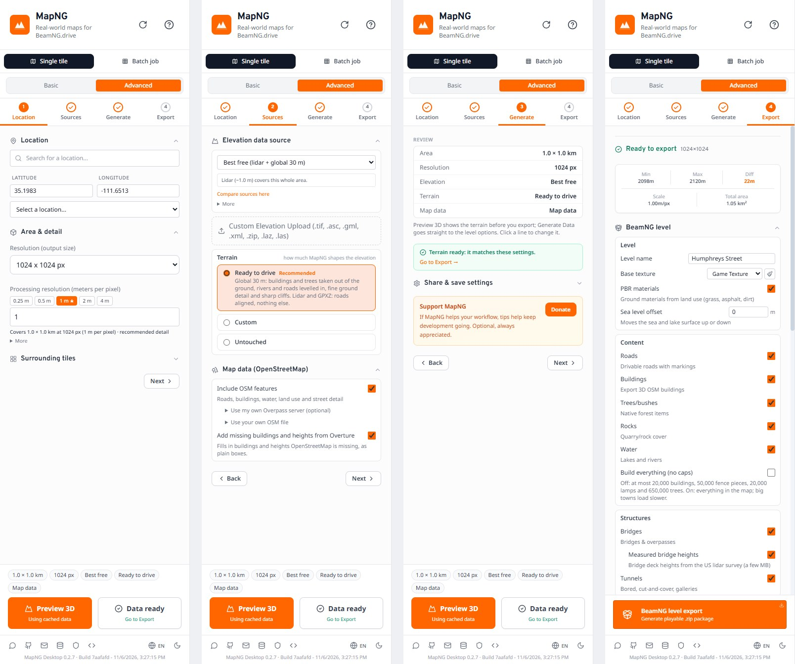
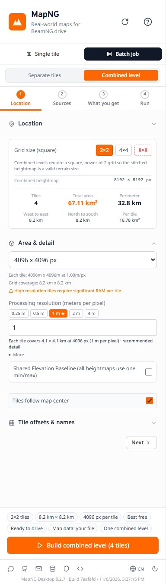
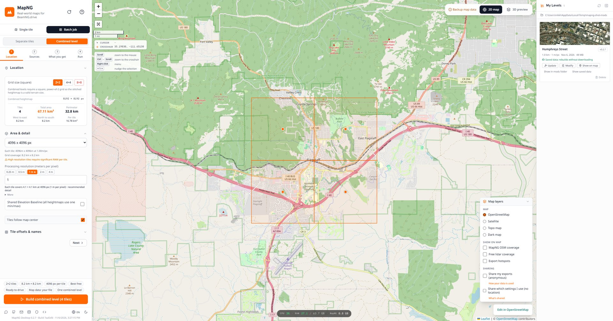
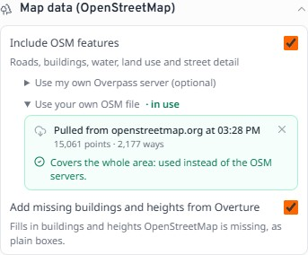
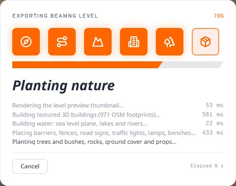
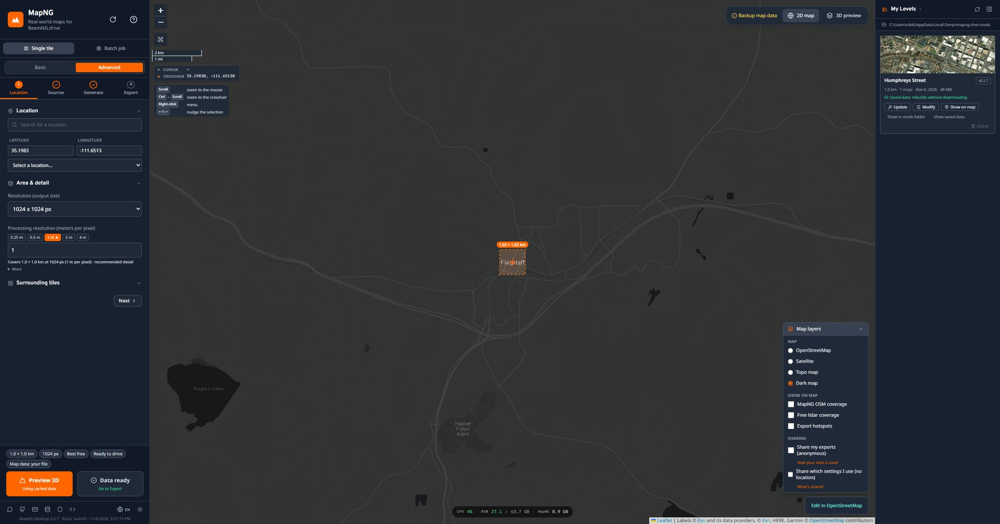
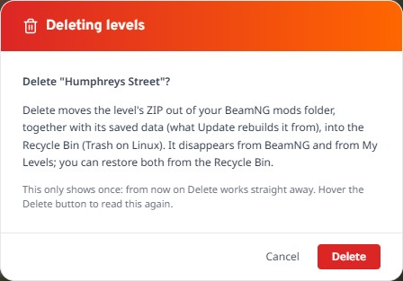
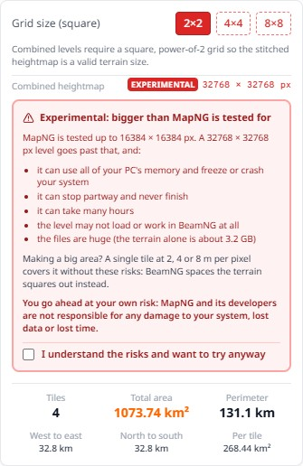

MapNG
MapNG🧭 One step at a time
The control panel used to be one long scroll of settings. Now it's four steps, with a row of tabs across the top and the buttons always at the bottom:
- Location: where the map is, how big, and how detailed.
- Sources: the elevation, how much MapNG shapes it, and the map data.
- Generate: your whole setup at a glance. Click any line to jump to that setting.
- Export: opens by itself once the terrain is ready, with the export button at the bottom.

Basic and Advanced now sit right under Single tile / Batch job, so you can always see which one you're in. The bottom bar always shows what you're about to build (size, detail, elevation, terrain, map data) as small chips you can click.
A small grey dot next to a section means you've changed something there from MapNG's recommended setup, with a Reset to put it back.
⛰️ One Terrain choice
"Raw terrain" before generating and "Terrain edits" in the export panel were two settings in two places for one question: how much should MapNG change the elevation? It's now a single choice under Sources (in Advanced):
- Ready to drive (recommended): on the global 30 m, buildings and trees are taken out of the ground, rivers and roads are levelled in, and fine detail and cliffs are added. Lidar and GPXZ only get their roads aligned.
- Custom: pick each change yourself, both the ones made while generating and the ones made in the level export.
- Untouched: the elevation exactly as downloaded. On 30 m data MapNG warns you what that means for roads and buildings.
Basic mode always uses Ready to drive.
🧩 Batch jobs, the same way

Batch mode gets the same steps: Location, Sources, What you get and Run. In place of Basic/Advanced it has the switch that matters here: Separate tiles or Combined level. Every option is shown in batch mode.
The Start button stays at the bottom on every step, so you never have to click through to the end. A job you didn't finish can be resumed from there too.
Combined levels now get the same structures as single levels: bridges (with measured deck heights from US lidar where there is some), tunnels, and the optional content caps that keep a big level light.

🗺️ Your own OpenStreetMap data
When the public OpenStreetMap servers are down or behind, MapNG falls back to Overture Maps, which is only updated once a month. If you just fixed your town on OpenStreetMap, that's frustrating. Under Sources → Map data → Use your own OSM file you now have three buttons:
- Pull gets the area straight from openstreetmap.org and uses it right away. That's the same data as its Export button, as fresh as the last edit.
- Download saves the same data as an
.osmfile wherever you choose. - View on OSM opens openstreetmap.org's Export page on your area.
You can also drop in an .osm file saved from JOSM, or an Overpass JSON file. MapNG says whether it covers the whole area.

openstreetmap.org hands out at most 50,000 points per export: about 1 km² of a dense town, much more of the countryside. Bigger areas get a clear message instead of a silent failure.
⏱️ Progress you can follow

The progress cards for generating and exporting now move smoothly instead of jumping. Each stage's bar is paced by how fast your own run is going, every step lands in the right stage, and shaping the terrain (roads, rivers, the ground under buildings) has a stage of its own.
The text under the bar is as detailed as before, and more where it was vague: you can see which server the map data came from, how many roads are being smoothed, and which file is being packed.
🖥️ A nicer desktop app
Downloads/MapNG Batch, and the finished window lists them with Show in folder.

📐 Big areas, honestly
MapNG is tested up to 16384 × 16384 px levels. In the desktop app you can now go past that with a combined batch level, but it's marked Experimental: MapNG lists what can go wrong (running out of memory, never finishing, many hours, a level BeamNG can't load, huge files) and waits until you tick I understand the risks. In the browser the limit stays, because a browser tab runs out of memory long before.
The better way to cover a huge area is one single tile at 2, 4 or 8 m per pixel. The terrain file stays a normal size, and BeamNG simply spaces the terrain squares further apart. What can trouble it is a lot of OpenStreetMap data, so MapNG now says so when an area is 16 km across or more. It works great for sparse places like deserts and mountains.
One more thing from the BeamNG team: objects more than about 30 km from a level's centre can start to shake, and MapNG warns you when a level reaches that far.

🧹 Smaller changes
Heads-up: the Windows build still isn't code-signed. If SmartScreen warns you, choose More info, then Run anyway.
Tell me how the new panel feels. Post in the MapNG Discord or open a GitHub issue. 🧡